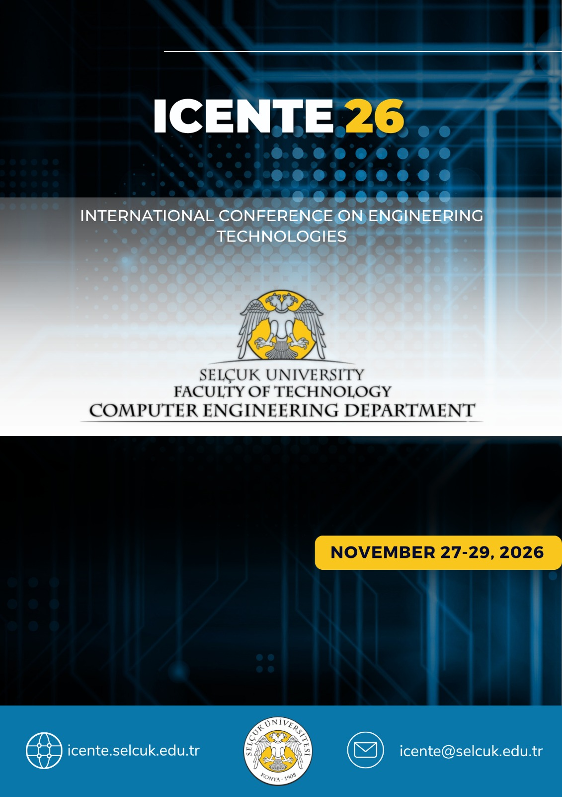

ICENTE 2026 – VIRTUAL CONFERENCE (27–29 NOVEMBER 2026)
CALL FOR PAPERS
International Conference on Engineering Technologies (ICENTE 2026) will be held on November 27–29, 2026, fully online, in collaboration with Selçuk University Faculty of Technology.
ICENTE aims to bring together leading international and interdisciplinary research communities, technology developers, and academic professionals to discuss both theoretical and practical issues in all fields of engineering technologies.
The conference serves as a high-level platform for presenting recent research results, ongoing developments, and global technological trends. We maintain high scientific standards through a rigorous peer-review process, with a diverse scientific board composed of esteemed scholars from various countries.
Innovations in wearable devices, medical imaging, surgical robotics, and digital health systems.
Artificial intelligence, optimization, simulation, and autonomous decision-making in engineering systems.
Renewable energy, smart grids, hydrogen and fuel cells, and sustainable energy systems.
Robotics, additive manufacturing, cyber-physical systems, and Industry 4.0 applications.
Functional materials, nanostructures, composites, and innovations in surface engineering.
Sustainable construction, urban systems, geotechnics, and civil infrastructure for future societies.